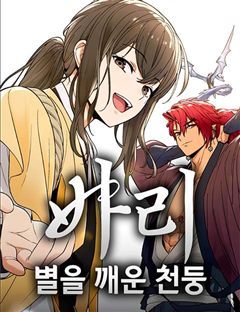
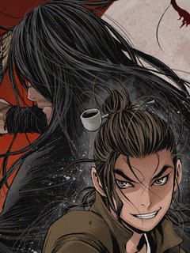

절대검감 같은 웹툰 추천

절대검감 · 김두루미 / 티아이 / 한중월야
절대검감 재밌게 봤다면 이 웹툰들도 좋아할 거예요. 같은 장르이면서 환골탈태, 동양, 모험 같은 요소가 겹치는 작품을, 겹치는 요소가 많은 순서로 20개 골랐어요.
2026-10-10 기준 · 네이버웹툰·카카오웹툰·레진코믹스 · 성인 작품 제외
내 취향으로 직접 골라 추천받기 →-
1
 네이버웹툰
네이버웹툰환생천마
철혈의 맹주, 강호의 절대자 '천하진'. 가문의 수치라 불리는 망나니 '벽리단'의 몸으로 깨어나다! 취미는 사기도박, 검은 창고에 박아둔지 오래. 하루아침에 천하제일인에서 천하의 쓰레기가 된 그는 다시 검을 잡고, 전생에서 이루지 못한 경지에 오르고…
환골탈태동양먼치킨액션무협네이버웹툰에서 보기 → -
2
 네이버웹툰
네이버웹툰붉은 이정표
세상의 평화를 유지하던 최강의 도깨비 집단 '홍혜.' 그러던 어느 날 동료의 배신으로 도깨비 '린'은 홍혜와 친구들 모두를 잃게 된다. 분노로 가득 찬 그는 홍혜의 최강전력 '검은 귀신' 으로서 복수를 향해 길을 떠난다.
동양모험이능력먼치킨액션네이버웹툰에서 보기 → -
3
 네이버웹툰
네이버웹툰시한부 천재가 살아남는 법
'스물을 넘기지 못하고 단명할 운명'을 타고난 정연신. 집안사람들 모두 연신을 홀대하지만, 직접 무공을 만들 정도로 그의 실력은 대단했다. 그러던 어느 날, 연신은 자신의 수명이 얼마 남지 않았음을 알게 되는데... 시한부 천재 정연신의 살아남기 위…
동양모험먼치킨복수극무협네이버웹툰에서 보기 → -
4
 네이버웹툰
네이버웹툰천마육성
마교의 태왕각주 ‘사마귀’의 명령으로 화산파 출몰 지역으로 파견나간 비객조. ‘설휘’는 화산파의 절대고수 ‘구종명’에게 죽임을 당할 위기에 처한다. 그때 눈 앞에 상태창이 나타나고 정찰 임무를 받기 직전으로 회귀하게 된다. 설휘는 자신이 전생에서 죽…
동양먼치킨회귀액션무협네이버웹툰에서 보기 → · 천마육성 같은 웹툰 → -
5
 네이버웹툰
네이버웹툰흑사
마교와의 마지막 전투에서 무림맹에게 배신당해 모든 전우를 잃은 흑사대장 정화… 악착같이 살아남은 그녀는 맹세한다. 전우들을 죽음으로 몰아넣은 마교와 무림맹 모두 없애버리겠다고. ”하늘이시여! 정녕 대의가 살아있다면… 죽어간 전우들의 한을 씻어낼 기회…
동양먼치킨복수극액션무협네이버웹툰에서 보기 → -
6
 네이버웹툰
네이버웹툰건곤불이기
건곤불이기乾坤不異記 [하늘과 땅의 이야기는 다르지 않다.] 신검神劍과 마도魔刀 강호를 호령하는 두 고수. 그중 마도魔刀의 무가 평범한 아이였던 '반통미'에게 이어진다. 그저 바보처럼 성실하고 근면하기만한 아버지에게 불만을 가졌던 '반통미'. 하지만…
동양모험성장물액션무협네이버웹툰에서 보기 → -
7
 네이버웹툰
네이버웹툰황제의 검
정난의 변에서 간신히 살아난 주윤문, 마교 천하제일 천마(天魔)와 소림사 육조 혜능(慧能)을 몸 안에 받아 천마서생 '파천'으로 재탄생하게 되는데… 절대지존을 향한 파천의 새로운 이야기가 시작된다!
동양먼치킨성장물액션무협네이버웹툰에서 보기 → -
8
 네이버웹툰
네이버웹툰할배무사와 지존 손녀
죽을 날을 앞두고 미련없이 생을 마무리 하려던 순간 덮친 멸문지화! 유진산은 홀로 생존한 갓난 손녀 '유설'이 다 자랄 때까지만이라도 살아남기로 결심한다. 이미 늙어버린 몸으로 육아와 수련을 병행하며 눈물겨운 사투를 벌이는 동안, 어느새 무림지존의…
모험먼치킨성장물액션무협네이버웹툰에서 보기 → -
9네이버웹툰
천하제일 대사형
잔혹했던 정사대전에 반 강제적으로 끌려갔던 대사형 ‘혁무상’. 수많은 피가 흐른 전쟁에 참전한지 7년. 전쟁은 진즉 끝났음에도 돌아오지 않아 죽은 줄 알았다. 간신히 고향 땅을 밟은 혁무상이 보게 된 것은, 고작 삼류 흑도에게 핍박당해 무너져가는 고…
환골탈태먼치킨복수극무협네이버웹툰에서 보기 → -
10

-
11
 네이버웹툰
네이버웹툰마도전생기
정파무림 의천맹의 최강 살수, 천하진. 자유를 찾기 위해 탈출을 감행하지만 코앞에서 목숨을 잃고 만다. 그런데… '신교불패, 만마앙복. 삼공자님의 쾌유를 경하드리옵니다!' 무림의 공적, 마교의 삼공자로 전생해버렸다?! 정파무림 최강 비밀병기 천하진의…
먼치킨회귀성장물액션무협네이버웹툰에서 보기 → · 마도전생기 같은 웹툰 → -
12네이버웹툰
미드우트
괴물 처치 부대 '스레투'가 사라진 지금... 인간들은 괴물들의 먹이가 되었다. 이유는 '이안'이라는 오퍼 지원자가 모든 군인들을 죽여버렸기 때문이다. 태어날 때부터 생명의 위협을 받으며 살아온 '진청도'는 전설의 아이템 '미드우트'를 이용해 과거로…
동양이능력복수극회귀액션네이버웹툰에서 보기 → -
13
 네이버웹툰
네이버웹툰무림사채왕
검 한자루를 벼르는데도, 제자들을 먹이고 입히는데도 아니, 숨만쉬는데도 돈이 필요한 곳. 무림. 돈이 필요한가? 신용등급이 떨어졌나? 그럼 대륙전장으로 오세요. 무담보 당일 대출 승인. 갚을 돈이 없다고? 아. 걱정하지 마세요. 몸으로도 받습니다.…
동양먼치킨복수극무협네이버웹툰에서 보기 → -
14
 네이버웹툰
네이버웹툰천씨세가의 망나니가 되었다
천씨세가의 대공자, 천무량을 평생 호위하며 충성을 다한 한 무사, 무명(無名) 하지만 천무량에게 배신당해 생을 마감한다. 그러나 다시 눈을 뜬 그는 자신을 죽인 천씨세가의 망나니 대공자, 천무량이 되어 있었다. 과거의 기억과 무공, 냉정한 판단력을…
복수극회귀성장물액션무협네이버웹툰에서 보기 → -
15

-
16

네이버웹툰바리, 별을 깨운 천둥
태어나자마자 버려진 독심술사 소녀, 바리. 세상의 저주 속에서 스스로를 요괴라 믿게 된 그녀 앞에 요괴 잡는 사냥꾼, 무 우레가 나타난다.“넌 요괴가 아니야. 난 네가 필요해.” 그 말을 믿은 순간, 운명이 깨어났다. 저승과 인간 세계를 잇는 길,…
환골탈태모험성장물액션무협네이버웹툰에서 보기 → -
17
 네이버웹툰
네이버웹툰절대회귀
"나를 과거로 보내주시오." 이 시대에서 그를 죽일 수 없다면, 과거로 돌아가면 되리라. 시간을 거스를 수 있는 '회귀대법(回歸大法)'으로 그토록 원하던 과거로 회귀한 한 남자. 가족도, 친구도, 삶도, 모두 잃었던 '검무극(劍無極)'의 복수를 위한…
먼치킨복수극회귀무협네이버웹툰에서 보기 → · 절대회귀 같은 웹툰 → -
18
 네이버웹툰
네이버웹툰보이드맨
신들이 지배하는 포스트 아포칼립스. 가족을 앗아간 신을 죽이기 위해, 난 죽음으로 들어갔다. “공허여, 내게 힘을 빌려줘. 신을 죽일 수 있는 힘을...!”
모험먼치킨복수극성장물액션네이버웹툰에서 보기 → -
19

레진코믹스요괴난전 [연재]
요괴들과의 한 판 승부! 외세 침략과 권력 암투로 혼돈에 빠진 조선, 누군가에 의해 봉인되어 있던 악귀들이 깨어나고... 잔혹한 살인 사건들이 곳곳에서 일어난다! 나라에 한을 품은 몰락한 양반 출신 진용은 일본 비밀 단체와 손잡고 조선을 파멸로 몰고…
동양복수극액션무협레진코믹스에서 보기 → -
20
![요괴난전 [단행본] 표지](../../thumbs/lezhin/7011785223212852.jpg) 레진코믹스
레진코믹스요괴난전 [단행본]
요괴들과의 한 판 승부! 외세 침략과 권력 암투로 혼돈에 빠진 조선, 누군가에 의해 봉인되어 있던 악귀들이 깨어나고... 잔혹한 살인 사건들이 곳곳에서 일어난다! 나라에 한을 품은 몰락한 양반 출신 진용은 일본 비밀 단체와 손잡고 조선을 파멸로 몰고…
동양복수극액션무협레진코믹스에서 보기 →